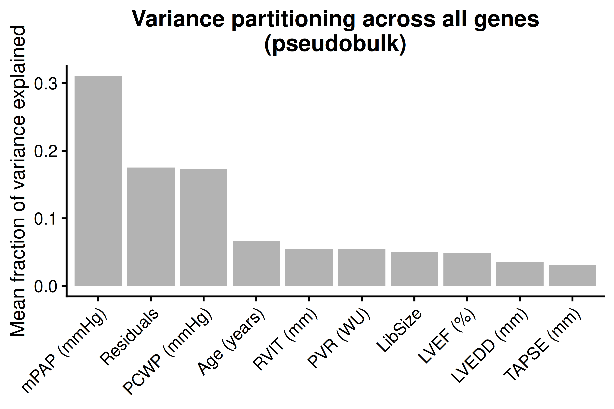
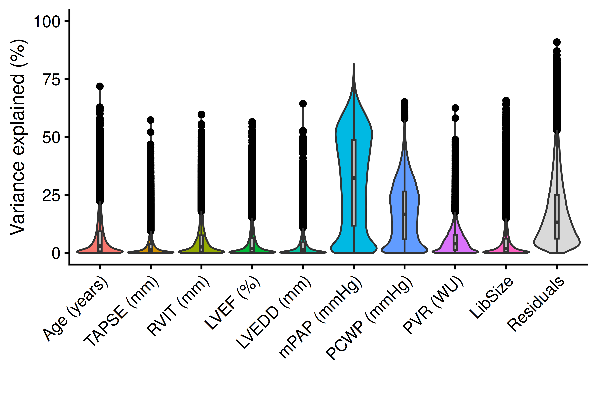
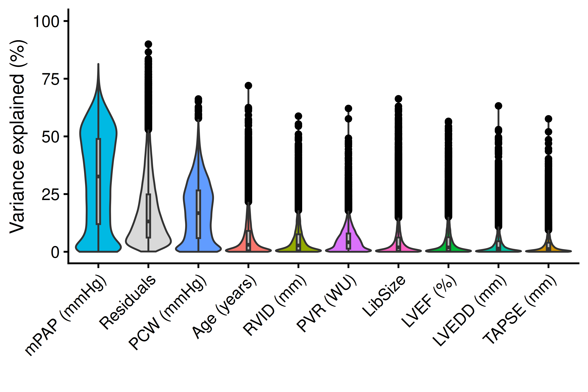
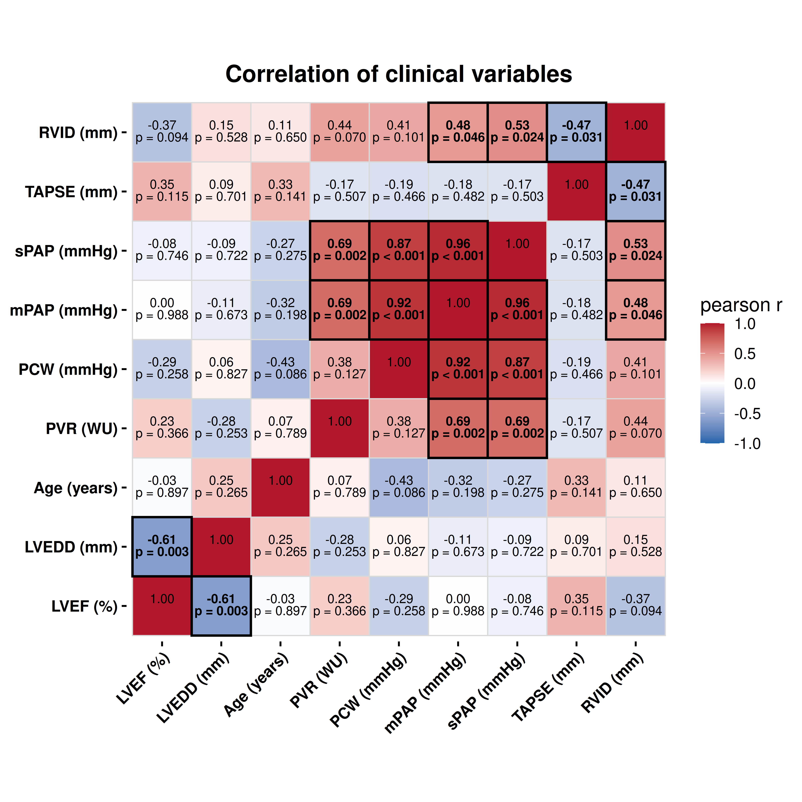
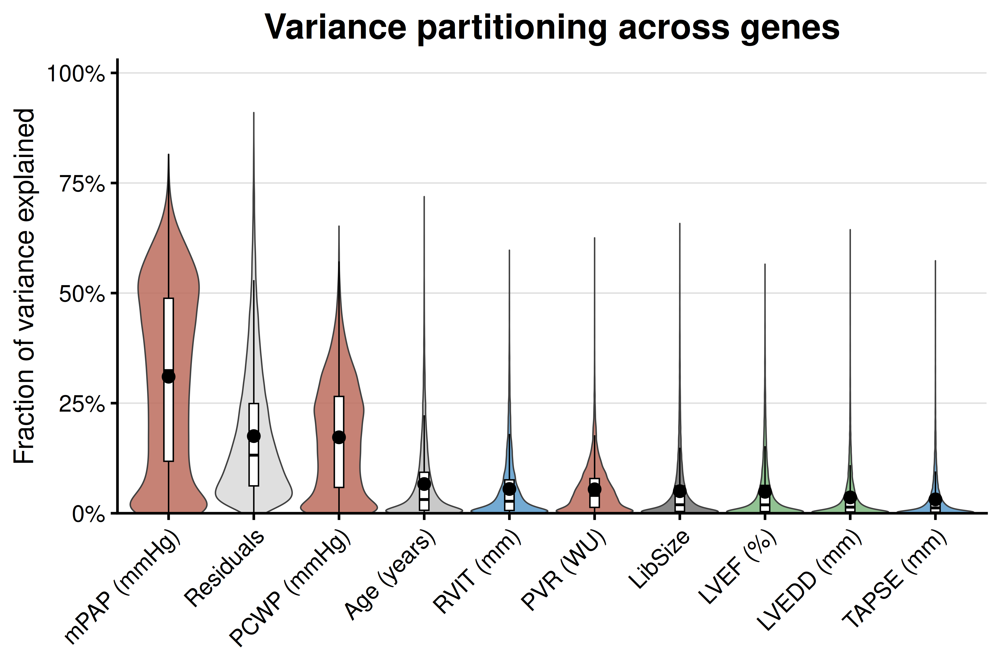
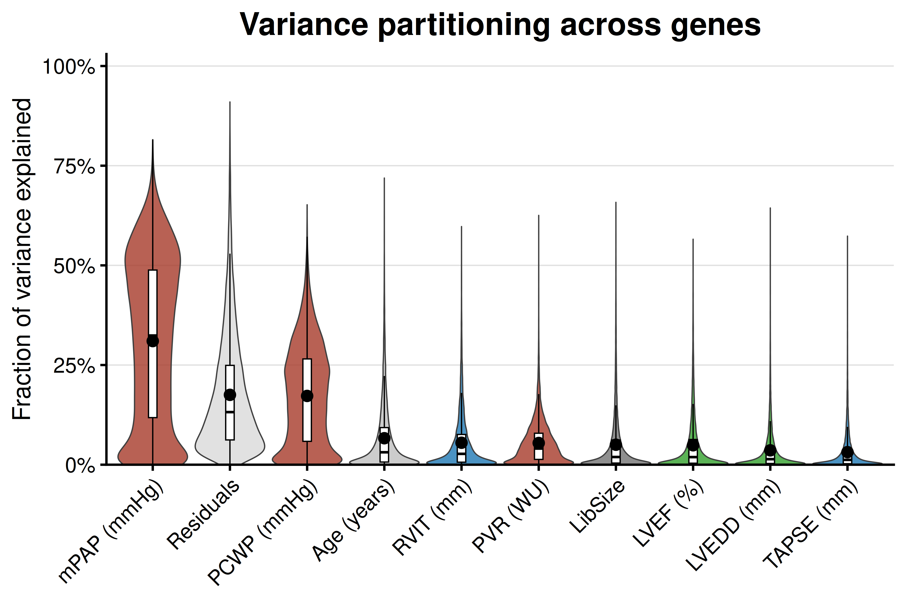

Last updated: 2026-08-24
Checks: 7 0
Knit directory: DCM_snRNAseq/
This reproducible R Markdown analysis was created with workflowr (version 1.7.2). The Checks tab describes the reproducibility checks that were applied when the results were created. The Past versions tab lists the development history.
Great! Since the R Markdown file has been committed to the Git repository, you know the exact version of the code that produced these results.
Great job! The global environment was empty. Objects defined in the global environment can affect the analysis in your R Markdown file in unknown ways. For reproduciblity it’s best to always run the code in an empty environment.
The command set.seed(20240606) was run prior to running
the code in the R Markdown file. Setting a seed ensures that any results
that rely on randomness, e.g. subsampling or permutations, are
reproducible.
Great job! Recording the operating system, R version, and package versions is critical for reproducibility.
Nice! There were no cached chunks for this analysis, so you can be confident that you successfully produced the results during this run.
Great job! Using relative paths to the files within your workflowr project makes it easier to run your code on other machines.
Great! You are using Git for version control. Tracking code development and connecting the code version to the results is critical for reproducibility.
The results in this page were generated with repository version b469852. See the Past versions tab to see a history of the changes made to the R Markdown and HTML files.
Note that you need to be careful to ensure that all relevant files for
the analysis have been committed to Git prior to generating the results
(you can use wflow_publish or
wflow_git_commit). workflowr only checks the R Markdown
file, but you know if there are other scripts or data files that it
depends on. Below is the status of the Git repository when the results
were generated:
Ignored files:
Ignored: .Rhistory
Ignored: .Rproj.user/
Ignored: output/CellChat/
Ignored: output/Cell_cell_communication_Macrophages/
Ignored: output/Chaffin_2022/
Ignored: output/Comparison_RV_bulk_RNAseq/
Ignored: output/Koenig_2022/
Ignored: output/Matrifibrocytes/
Ignored: output/Matrifibrocytes_disease_vs_HC_adj_subsets/
Ignored: output/SSc_PAH/
Untracked files:
Untracked: .Rprofile
Untracked: Chaffin_wilcox.csv
Untracked: GRCh38-2020-A_build/
Untracked: Koenig_wilcox.csv
Untracked: analysis/Amrute_2024_fibroblast_integration.Rmd
Untracked: analysis/Amrute_2024_fibroblast_pseudobulk.Rmd
Untracked: analysis/Chaffin_2022.Rmd
Untracked: analysis/Check_IMC_panel.Rmd
Untracked: analysis/Comparison_RV_bulk_RNAseq.Rmd
Untracked: analysis/DE_Group_all_cell_types.Rmd
Untracked: analysis/EC_capillary_angiogenic_boxplot_stats.csv
Untracked: analysis/Endothelial_cells_SGLT2_I.Rmd
Untracked: analysis/Fibroblasts_DA_DE_26.Rmd
Untracked: analysis/Genes_Luxembourg.Rmd
Untracked: analysis/HC_DEGs_clustering.Rmd
Untracked: analysis/Koenig_2022.Rmd
Untracked: analysis/Mass_Spec_RV_dysf.Rmd
Untracked: analysis/Mass_Spec_proteomics.Rmd
Untracked: analysis/Mass_Spec_proteomics_2.Rmd
Untracked: analysis/Mass_Spec_proteomics_3.Rmd
Untracked: analysis/Matrifibrocytes.Rmd
Untracked: analysis/Matrifibrocytes_2.Rmd
Untracked: analysis/Matrifibrocytes_3.Rmd
Untracked: analysis/Matrifibrocytes_disease_vs_HC.Rmd
Untracked: analysis/Matrifibrocytes_disease_vs_HC_adj.Rmd
Untracked: analysis/Matrifibrocytes_disease_vs_HC_adj_subsets.Rmd
Untracked: analysis/Matrifibrocytes_high_score_populations_disease_vs_HC_adj.Rmd
Untracked: analysis/Matrifibrocytes_integration.Rmd
Untracked: analysis/Olink_RV_dysf.Rmd
Untracked: analysis/Olink_SSc_PAH.Rmd
Untracked: analysis/Olink_SSc_PAH_draft.Rmd
Untracked: analysis/Olink_proteomics_2.Rmd
Untracked: analysis/Proteomics_OLINK_MS.Rmd
Untracked: analysis/Proteomics_combined.Rmd
Untracked: analysis/Proteomics_combined_2.Rmd
Untracked: analysis/Pseudobulk_all.csv
Untracked: analysis/Pseudobulk_all_2.csv
Untracked: analysis/Pseudobulk_byCellType_facetGrid.pdf
Untracked: analysis/Pseudobulk_byCellType_filtered_wrap3col.pdf
Untracked: analysis/Pseudobulk_byCellType_filtered_wrap3col_proportional.pdf
Untracked: analysis/Pseudobulk_byCellType_wilcox.csv
Untracked: analysis/Pseudobulk_byCellType_wilcox.filtered.csv
Untracked: analysis/Pseudobulk_byCellType_wilcox_2.csv
Untracked: analysis/QC_integration_annotation_HC.Rmd
Untracked: analysis/Reichart_ncRNA.Rmd
Untracked: analysis/Reichart_wilcox.csv
Untracked: analysis/Selection_genes_histology.Rmd
Untracked: analysis/TAPSE_sPAP_concordance_3datasets.Rmd
Untracked: analysis/TF_activity_program_score_correlations_by_sample.csv
Untracked: analysis/TF_activity_program_scores_by_sample_cell_state.csv
Untracked: analysis/TOM/
Untracked: analysis/UntitledR.R
Untracked: analysis/ec_Reichart_logCPM.csv
Untracked: analysis/mPAP_concordance_3datasets.Rmd
Untracked: analysis/omnipathr-log/
Untracked: analysis/prot_test.Rmd
Untracked: analysis/test_1.Rmd
Untracked: analysis/test_fb_prot.Rmd
Untracked: code/Add_metadata.R
Untracked: code/Check DYSF.R
Untracked: code/Clustering_genes.R
Untracked: code/DE_5_percent.Rmd
Untracked: code/DE_5_percent.html
Untracked: code/DE_5_percent/
Untracked: code/DE_CM_test1.R
Untracked: code/DE_no_401.Rmd
Untracked: code/DE_no_401.html
Untracked: code/DE_no_401/
Untracked: code/Differential abundance test1.R
Untracked: code/Differential_Expression_edgeR_All.Rmd
Untracked: code/Differential_Expression_edgeR_All_2.Rmd
Untracked: code/Differential_Expression_edgeR_All_2.html
Untracked: code/Differential_Expression_edgeR_All_Age.Rmd
Untracked: code/Differential_Expression_edgeR_All_Age_2.Rmd
Untracked: code/Differential_Expression_edgeR_All_Age_2.html
Untracked: code/Differential_Expression_edgeR_All_groups.Rmd
Untracked: code/Differential_Expression_edgeR_All_groups.html
Untracked: code/Differential_Expression_edgeR_All_groups_2.Rmd
Untracked: code/Differential_Expression_edgeR_All_groups_2.html
Untracked: code/Differential_Expression_edgeR_All_groups_3.Rmd
Untracked: code/Differential_Expression_edgeR_All_groups_3.html
Untracked: code/Endothelial_cells_cubclustering_removed.Rmd
Untracked: code/PCA and CCA analysis test.R
Untracked: code/Pseudobulk DCM HC.R
Untracked: code/Published_heart_datasets_RV_vs_LV.Rmd
Untracked: code/QC_integration_annotation_orig.Rmd
Untracked: code/Removed_chunks.Rmd
Untracked: code/UpSet_plot_DEGs.Rmd
Untracked: code/Volcano_highlighted_genes.R
Untracked: code/ezInteractiveTable.Rmd
Untracked: code/ezInteractiveTable.html
Untracked: code/old.R
Untracked: data/Baza_dla_Gino_AP.xlsx
Untracked: data/Baza_dla_Gino_AP_2.xlsx
Untracked: data/Baza_dla_Gino_AP_short.xlsx
Untracked: data/Cellbender_output/
Untracked: data/Cellranger_output/
Untracked: data/DCM_Clinical_data_22.xlsx
Untracked: data/DCM_Clinical_data_26.xlsx
Untracked: data/DCM_Clinical_data_30.xlsx
Untracked: data/DCM_Clinical_data_83.xlsx
Untracked: data/HMEC_RNAseq/
Untracked: data/Heart_datasets/
Untracked: data/Heart_specific_proteome.xlsx
Untracked: data/Homo_sapiens.GRCh38.93.gtf
Untracked: data/Human_plasma_proteome.xlsx
Untracked: data/Mass_spec/
Untracked: data/Massons_quantification.xlsx
Untracked: data/OLINK/
Untracked: data/OLINK_LVAD/
Untracked: data/Published_datasets/
Untracked: data/Raw/
Untracked: data/SSc-PAH/
Untracked: data/gencode.v46.chr_patch_hapl_scaff.annotation.gtf
Untracked: data/gencode.v46.chr_patch_hapl_scaff.basic.annotation.gtf
Untracked: data/refdata-gex-GRCh38-2020-A/
Untracked: omnipathr-log/
Untracked: output/Add_cell_states_remove_contamination/
Untracked: output/Amrute_2024_fibroblast_integration/
Untracked: output/Amrute_2024_fibroblast_pseudobulk/
Untracked: output/Amrute_2024_matrifibrocyte_markers/
Untracked: output/Biomarkers_selection/
Untracked: output/CM_lncRNAs/
Untracked: output/Cardiomyocytes_DA_DE/
Untracked: output/Cardiomyocytes_subclustering/
Untracked: output/Cardiomyocytes_subclustering_26/
Untracked: output/Cell_cell_communication/
Untracked: output/Cell_cell_communication_LV/
Untracked: output/Cell_cell_communication_LV2/
Untracked: output/Cell_cycle/
Untracked: output/Check_IMC_panel/
Untracked: output/Comparison_LV/
Untracked: output/DA_DE_all_cell_types_and_parameters/
Untracked: output/DE_Fibrosis_all_cell_types/
Untracked: output/DE_Fibrosis_fibroblasts/
Untracked: output/DE_Group_all_cell_types/
Untracked: output/DE_all_cell_types_mPAP/
Untracked: output/DE_mPAP_all_cell_types/
Untracked: output/Differential_expression_edgeR_All/
Untracked: output/Differential_expression_edgeR_All_Age/
Untracked: output/Dysferlin/
Untracked: output/Endothelial_cells_Koenig_Reichart/
Untracked: output/Endothelial_cells_Koenig_Reichart_manuscript/
Untracked: output/Endothelial_cells_SGLT2_I/
Untracked: output/Endothelial_cells_published_datasets/
Untracked: output/Endothelial_cells_subclustering/
Untracked: output/Fibroblasts_DA_DE_26/
Untracked: output/Fibroblasts_subclustering/
Untracked: output/Figures_manuscript/
Untracked: output/Genes_Luxembourg/
Untracked: output/Genes_Luxembourg_2/
Untracked: output/HC_DEGs_clustering/
Untracked: output/HMEC/
Untracked: output/HMEC_second_run/
Untracked: output/HMEC_second_run_manuscript/
Untracked: output/LVAD_OLINK/
Untracked: output/LV_Klaudia/
Untracked: output/LV_datasets_DCM_vs_HC/
Untracked: output/Lymphocytes_subclustering/
Untracked: output/MOFA_integrative_analysis/
Untracked: output/MOFA_integrative_analysis_v2/
Untracked: output/MOFA_integrative_analysis_v3/
Untracked: output/MOFA_integrative_analysis_v4/
Untracked: output/MOFA_integrative_analysis_v6/
Untracked: output/MS_proteomics/
Untracked: output/Macrophages_subclustering/
Untracked: output/Mass_Spec_RV_dysf/
Untracked: output/Mass_Spec_proteomics/
Untracked: output/Mass_Spec_proteomics_2/
Untracked: output/Mass_Spec_proteomics_3/
Untracked: output/Matrifibrocytes_1/
Untracked: output/Matrifibrocytes_2/
Untracked: output/Matrifibrocytes_2_adjusted/
Untracked: output/Matrifibrocytes_disease_vs_HC/
Untracked: output/Matrifibrocytes_disease_vs_HC_adj/
Untracked: output/Matrifibrocytes_high_score_populations_disease_vs_HC_adj/
Untracked: output/Matrifibrocytes_integration/
Untracked: output/Matrifibrocytes_subclusters_disease_vs_HC_adj/
Untracked: output/Mural_cells_subclustering/
Untracked: output/Olink_RV_dysf/
Untracked: output/Olink_SSc_PAH/
Untracked: output/Olink_SSc_PAH_draft/
Untracked: output/Olink_proteomics/
Untracked: output/Olink_proteomics_2/
Untracked: output/Proteomics_FB_state_PCA/
Untracked: output/Proteomics_PCA_cell_state_composition/
Untracked: output/Proteomics_combined/
Untracked: output/Proteomics_combined_2/
Untracked: output/Proteomics_combined_3/
Untracked: output/Proteomics_combined_4/
Untracked: output/Proteomics_combined_final/
Untracked: output/Proteomics_combined_final_males_only/
Untracked: output/Proteomics_combined_final_males_only_no_PK259/
Untracked: output/Proteomics_combined_final_males_only_no_batch2/
Untracked: output/Proteomics_differential_abundance/
Untracked: output/Proteomics_differential_abundance_v2/
Untracked: output/Proteomics_differential_abundance_v3/
Untracked: output/Proteomics_differential_abundance_v4/
Untracked: output/Proteomics_differential_abundance_v6/
Untracked: output/Proteomics_matched_PCA_multicell_states_v2/
Untracked: output/Proteomics_quality_control/
Untracked: output/Proteomics_quality_control_v2/
Untracked: output/Proteomics_quality_control_v3/
Untracked: output/Proteomics_quality_control_v4/
Untracked: output/Proteomics_quality_control_v6/
Untracked: output/QC_integration_annotation/
Untracked: output/QC_integration_annotation_HC/
Untracked: output/Reichart2022_ventricle_specificity_noncoding/
Untracked: output/Reichart_DE_DCMvsHC/
Untracked: output/Selection_genes_histology/
Untracked: output/TAPSE_sPAP_concordance_3datasets/
Untracked: output/TAPSE_sPAP_proteomics_snrna/
Untracked: output/UntitledR.R
Untracked: output/Variance_partitioning/
Untracked: output/mPAP_concordance_3datasets/
Untracked: redsfewfref.R
Untracked: reference_sources/
Untracked: renv.lock
Untracked: renv/
Untracked: wflow_publish.log
Unstaged changes:
Modified: analysis/Amrute_2024_matrifibrocyte_markers.Rmd
Modified: analysis/CM_lncRNAs.Rmd
Modified: analysis/Cardiomyocytes_DA_DE.Rmd
Modified: analysis/Cell_cycle.Rmd
Modified: analysis/Comparison_LV.Rmd
Modified: analysis/DE_Fibrosis_all_cell_types.Rmd
Deleted: analysis/Differential_Expression_edgeR_All.Rmd
Deleted: analysis/Differential_Expression_edgeR_All_Age.Rmd
Modified: analysis/Endothelial_cells_Koenig_Reichart_manuscript.Rmd
Modified: analysis/Endothelial_cells_published_datasets.rmd
Modified: analysis/Figures_manuscript.Rmd
Modified: analysis/HMEC.Rmd
Modified: analysis/HMEC_second_run_manuscript.Rmd
Modified: analysis/LV_Klaudia.Rmd
Modified: analysis/MOFA_integrative_analysis_v6.Rmd
Modified: analysis/Olink_proteomics.Rmd
Modified: analysis/Proteomics_PCA_cell_state_composition.Rmd
Modified: analysis/Proteomics_combined_final.Rmd
Modified: analysis/Reichart_DE_DCMvsHC.Rmd
Modified: analysis/SSc_PAH.Rmd
Modified: analysis/_site.yml
Note that any generated files, e.g. HTML, png, CSS, etc., are not included in this status report because it is ok for generated content to have uncommitted changes.
These are the previous versions of the repository in which changes were
made to the R Markdown (analysis/Variance_partitioning.Rmd)
and HTML (docs/Variance_partitioning.html) files. If you’ve
configured a remote Git repository (see ?wflow_git_remote),
click on the hyperlinks in the table below to view the files as they
were in that past version.
| File | Version | Author | Date | Message |
|---|---|---|---|---|
| html | 7c8c1a5 | GinoBonazza | 2026-08-13 | Build site. |
| Rmd | cf25d09 | GinoBonazza | 2026-08-13 | wflow_publish("analysis/Variance_partitioning.Rmd") |
| html | ba58006 | GinoBonazza | 2026-02-16 | Build site. |
| Rmd | bf1a899 | GinoBonazza | 2026-02-16 | wflow_publish("analysis/Variance_partitioning.Rmd") |
| html | be643d2 | GinoBonazza | 2025-08-18 | Build site. |
| Rmd | 796b1a2 | GinoBonazza | 2025-08-18 | wflow_publish("analysis/Variance_partitioning.Rmd") |
# Get current file name to make folder
current_file <- "Variance_partitioning"
# Load libraries
library(here)
library(readr)
library(readxl)
library(Seurat)
library(DropletUtils)
library(Matrix)
library(scDblFinder)
library(scCustomize)
library(dplyr)
library(ggplot2)
library(magrittr)
library(tidyverse)
library(reshape2)
library(S4Vectors)
library(SingleCellExperiment)
library(pheatmap)
library(png)
library(gridExtra)
library(knitr)
library(scales)
library(RColorBrewer)
library(Matrix.utils)
library(tibble)
library(ggplot2)
library(scater)
library(patchwork)
library(statmod)
library(clustree)
library(harmony)
library(gprofiler2)
library(clusterProfiler)
library(statmod)
library(edgeR)
library(speckle)
library(EnhancedVolcano)
library(decoupleR)
library(OmnipathR)
library(dorothea)
library(enrichplot)
library(png)
library(reactable)
library(UpSetR)
library(ComplexHeatmap)
library(msigdbr)
library(simplifyEnrichment)
library(igraph)
library(gridExtra)
library(ggpubr)
library(variancePartition)
#Output paths
output_dir_data <- here::here("output", current_file)
if (!dir.exists(output_dir_data)) dir.create(output_dir_data)
if (!dir.exists(here::here("docs", "figure"))) dir.create(here::here("docs", "figure"))
output_dir_figs <- here::here("docs", "figure", paste0(current_file, ".Rmd"))
if (!dir.exists(output_dir_figs)) dir.create(output_dir_figs)Load cardiomyocytes dataset
DCM_RV <- qs2::qs_read(here::here("output", "Add_cell_states_remove_contamination", "DCM_RV_cell_states_RNA.qs2"), nthreads = 32)
DefaultAssay(DCM_RV) <- "RNA"Clinical_data <- read_excel(here::here("data", "DCM_Clinical_data_22.xlsx"))
# make cell-level metadata by matching Sample
add_metadata <- DCM_RV[[]] %>%
select(Sample) %>%
left_join(Clinical_data, by = "Sample")
row.names(add_metadata) <- row.names(DCM_RV[[]])
# remove old columns that are present in the new clinical file
cols_to_overwrite <- setdiff(colnames(Clinical_data), "Sample")
DCM_RV@meta.data[, cols_to_overwrite] <- NULL
# add corrected metadata
DCM_RV <- AddMetaData(
DCM_RV,
metadata = add_metadata
)
rm(add_metadata, Clinical_data, cols_to_overwrite)meta <- DCM_RV@meta.data %>%
dplyr::select(c("Sample",
"Age_years",
"mPAP_mmHg",
"sPAP_mmHg",
"PCW_mmHg",
"PVR_WU",
"TAPSE_mm",
"RVIT_mm",
"LVEF_percent",
"LVEDD_mm")
) %>%
distinct() %>%
arrange(match(Sample, unique(DCM_RV$Sample))) %>%
dplyr::rename(
`Age (years)` = Age_years,
`mPAP (mmHg)` = mPAP_mmHg,
`sPAP (mmHg)` = sPAP_mmHg,
`PCWP (mmHg)` = PCW_mmHg,
`PVR (WU)` = PVR_WU,
`TAPSE (mm)` = TAPSE_mm,
`RVIT (mm)` = RVIT_mm,
`LVEF (%)` = LVEF_percent,
`LVEDD (mm)` = LVEDD_mm
)
rownames(meta) <- meta$Sample
DCM_RV$pseudobulk <- "Pseudobulk"
pb <- Seurat2PB(
DCM_RV,
sample = "Sample",
cluster = "pseudobulk")
colnames(pb) <- pb$samples$sample
keep_samples <- pb$samples$lib.size > 5e4
pb <- pb[, keep_samples]
keep_genes <- filterByExpr(pb)
pb <- pb[keep_genes, ]
pb <- pb[, meta$Sample]
all.equal(colnames(pb), rownames(meta))[1] TRUEmeta$LibSize <- pb$samples$lib.size
meta$log10_LibSize <- log10(meta$LibSize)
vobj <- voomWithDreamWeights(pb, ~ 1, meta)
form <- ~ `Age (years)` +
`TAPSE (mm)` +
`RVIT (mm)` +
`LVEF (%)` +
`LVEDD (mm)` +
`mPAP (mmHg)` +
`PCWP (mmHg)` +
`PVR (WU)` +
`LibSize`
varPart <- fitExtractVarPartModel(
vobj, form, meta,
missing = "pairwise",
BPPARAM = MulticoreParam(30))
colnames(varPart) <- gsub("`", "", colnames(varPart))
vp_mean <- sort(colMeans(varPart), decreasing = TRUE)df <- data.frame(variable = names(vp_mean),
value = vp_mean)
ggplot(df, aes(x = reorder(variable, -value), y = value)) +
geom_col(fill = "grey70") +
labs(
y = "Mean fraction of variance explained",
x = NULL,
title = "Variance partitioning across all genes\n(pseudobulk)"
) +
theme_classic(base_size = 14) + # clean theme
theme(
plot.title = element_text(hjust = 0.5, size = 16, face = "bold", color = "black"),
axis.text.x = element_text(angle = 45, hjust = 1, size = 12, color = "black"),
axis.text.y = element_text(size = 12, color = "black"),
axis.title.y = element_text(size = 14, color = "black"),
axis.line = element_line(color = "black"),
panel.border = element_blank(),
panel.grid = element_blank()
)
p <- plotVarPart(varPart) +
theme_classic(base_size = 14) +
theme(
axis.text.x = element_text(angle = 45, hjust = 1, size = 12, color = "black"),
axis.text.y = element_text(size = 12, color = "black"),
axis.title.y = element_text(size = 14, color = "black"),
plot.title = element_text(hjust = 0.5, face = "bold"),
panel.grid = element_blank(),
panel.border = element_blank(),
axis.line = element_line(color = "black"),
legend.position = "none"
)
p
vp_order <- names(sort(colMeans(varPart), decreasing = TRUE))
p <- plotVarPart(varPart) +
scale_x_discrete(limits = vp_order) + # enforce order
theme_classic(base_size = 14) +
theme(
axis.text.x = element_text(angle = 45, hjust = 1, size = 12, color = "black"),
axis.text.y = element_text(size = 12, color = "black"),
axis.title.y = element_text(size = 14, color = "black"),
plot.title = element_text(hjust = 0.5, face = "bold"),
panel.grid = element_blank(),
panel.border = element_blank(),
axis.line = element_line(color = "black"),
legend.position = "none"
)
p
library(Hmisc)
library(ggtext)
method <- "pearson"
dat <- meta %>%
dplyr::select(where(is.numeric)) %>%
dplyr::select(-any_of(c("LibSize", "log10_LibSize")))
rc <- Hmisc::rcorr(as.matrix(dat), type = method)
r_mat <- rc$r
p_mat <- rc$P
hc <- hclust(as.dist(1 - abs(r_mat)), method = "average")
ord <- hc$labels[hc$order]
r_mat <- r_mat[ord, ord, drop = FALSE]
p_mat <- p_mat[ord, ord, drop = FALSE]
r_long <- as.data.frame(r_mat) %>%
tibble::rownames_to_column("var1") %>%
pivot_longer(-var1, names_to = "var2", values_to = "r")
p_long <- as.data.frame(p_mat) %>%
tibble::rownames_to_column("var1") %>%
pivot_longer(-var1, names_to = "var2", values_to = "p")
df <- left_join(r_long, p_long, by = c("var1", "var2")) %>%
mutate(
var1 = factor(var1, levels = ord),
var2 = factor(var2, levels = ord),
i1 = as.integer(var1),
i2 = as.integer(var2)
)
fmt_p <- function(p) {
ifelse(is.na(p), "",
ifelse(p < 0.001, "p < 0.001", paste0("p = ", formatC(p, format = "f", digits = 3))))
}
df <- df %>%
mutate(
r_txt = ifelse(is.na(r), "", sprintf("%.2f", r)),
p_txt = fmt_p(p),
strong = !is.na(r) & !is.na(p) & (abs(r) > 0.4) & (p < 0.05),
label = ifelse(
strong,
paste0("<b>", r_txt, "</b><br><b>", p_txt, "</b>"),
paste0(r_txt, "<br>", p_txt)
)
)
ggplot(df, aes(x = var2, y = var1, fill = r)) +
# base tiles (uniform light borders)
geom_tile(color = "grey85", linewidth = 0.4) +
# overlay: strong correlations get a clean black outline on top
geom_tile(
data = dplyr::filter(df, strong),
aes(x = var2, y = var1),
fill = NA, color = "black", linewidth = 0.8
) +
geom_richtext(
aes(label = label),
fill = NA, label.color = NA,
size = 3.2, lineheight = 0.95
) +
scale_fill_gradient2(
low = "#2166AC", mid = "white", high = "#B2182B",
limits = c(-1, 1), oob = scales::squish,
name = paste0(method, " r")
) +
coord_fixed() +
labs(title = "Correlation of clinical variables", x = NULL, y = NULL) +
theme_classic(base_size = 14) +
theme(
plot.title = element_text(hjust = 0.5, face = "bold"),
axis.text.x = element_text(angle = 45, hjust = 1, face = "bold", color = "black"),
axis.text.y = element_text(face = "bold", color = "black"),
axis.line = element_blank()
)
vp_order <- names(sort(colMeans(varPart), decreasing = TRUE))
vp_long <- as.data.frame(varPart) %>%
tibble::rownames_to_column("gene") %>%
tidyr::pivot_longer(
cols = -gene,
names_to = "variable",
values_to = "fraction"
) %>%
dplyr::mutate(
variable = factor(variable, levels = vp_order),
domain = dplyr::case_when(
variable %in% c("mPAP (mmHg)", "PCWP (mmHg)", "PVR (WU)", "sPAP (mmHg)") ~ "PH",
variable %in% c("RVIT (mm)", "TAPSE (mm)", "RVIT (mm)") ~ "RV",
variable %in% c("LVEF (%)", "LVEDD (mm)") ~ "LV",
variable %in% c("Age (years)") ~ "Demographic",
variable %in% c("LibSize", "BCA (mg/ml)", "Batch") ~ "Technical",
variable %in% c("Residuals", "Residual") ~ "Residuals",
TRUE ~ "Other"
)
)
vp_summary <- vp_long %>%
dplyr::group_by(variable) %>%
dplyr::summarise(
mean_fraction = mean(fraction, na.rm = TRUE),
.groups = "drop"
)
domain_cols <- c(
"PH" = "#A63A2A",
"RV" = "#1F78B4",
"LV" = "#33A02C",
"Demographic" = "grey75",
"Technical" = "grey45",
"Residuals" = "grey85",
"Other" = "grey65"
)
vp_base_theme <- theme_classic(base_size = 14) +
theme(
axis.text.x = element_text(
angle = 45,
hjust = 1,
vjust = 1,
size = 12,
color = "black"
),
axis.text.y = element_text(size = 12, color = "black"),
axis.title.y = element_text(size = 14, color = "black"),
axis.title.x = element_blank(),
plot.title = element_text(
hjust = 0.5,
face = "bold",
size = 18,
color = "black"
),
panel.grid.major.y = element_line(color = "grey88", linewidth = 0.35),
panel.grid.major.x = element_blank(),
panel.grid.minor = element_blank()
)domain_cols_muted <- c(
"PH" = "#BC6C5D",
"RV" = "#5B9BCB",
"LV" = "#7EB77F",
"Demographic" = "grey75",
"Technical" = "grey45",
"Residuals" = "grey85",
"Other" = "grey65"
)
ggplot(vp_long, aes(x = variable, y = fraction, fill = domain)) +
geom_violin(
color = "grey25",
linewidth = 0.35,
trim = TRUE,
scale = "width",
alpha = 0.85
) +
geom_boxplot(
width = 0.11,
fill = "white",
color = "black",
linewidth = 0.35,
outlier.shape = NA
) +
geom_point(
data = vp_summary,
aes(x = variable, y = mean_fraction),
inherit.aes = FALSE,
size = 2.5,
shape = 21,
fill = "black",
color = "black"
) +
scale_fill_manual(values = domain_cols_muted) +
scale_y_continuous(
labels = scales::percent_format(accuracy = 1),
expand = expansion(mult = c(0, 0.03)),
limits = c(0, 1)
) +
labs(
y = "Fraction of variance explained",
title = "Variance partitioning across genes"
) +
vp_base_theme +
theme(
legend.position = "none"
)
| Version | Author | Date |
|---|---|---|
| 7c8c1a5 | GinoBonazza | 2026-08-13 |
ggplot(vp_long, aes(x = variable, y = fraction, fill = domain)) +
geom_violin(
color = "grey25",
linewidth = 0.35,
trim = TRUE,
scale = "width",
alpha = 0.8
) +
geom_boxplot(
width = 0.11,
fill = "white",
color = "black",
linewidth = 0.35,
outlier.shape = NA
) +
geom_point(
data = vp_summary,
aes(x = variable, y = mean_fraction),
inherit.aes = FALSE,
size = 2.5,
shape = 21,
fill = "black",
color = "black"
) +
scale_fill_manual(values = domain_cols) +
scale_y_continuous(
labels = scales::percent_format(accuracy = 1),
expand = expansion(mult = c(0, 0.03)),
limits = c(0, 1)
) +
labs(
y = "Fraction of variance explained",
title = "Variance partitioning across genes"
) +
vp_base_theme +
theme(
legend.position = "none"
)
| Version | Author | Date |
|---|---|---|
| 7c8c1a5 | GinoBonazza | 2026-08-13 |
Variance_by_gene <- as.data.frame(varPart) %>%
tibble::rownames_to_column("gene")
Variance_mean <- data.frame(
variable = names(vp_mean),
mean_fraction = as.numeric(vp_mean)
)
writexl::write_xlsx(
list(
Variance_by_gene = Variance_by_gene,
Variance_mean = Variance_mean
),
here::here(output_dir_data, "Variance_partitioning_SuppData.xlsx")
)
sessionInfo()R version 4.5.2 (2025-10-31)
Platform: x86_64-pc-linux-gnu
Running under: Ubuntu 24.04.3 LTS
Matrix products: default
BLAS: /usr/lib/x86_64-linux-gnu/openblas-pthread/libblas.so.3
LAPACK: /usr/lib/x86_64-linux-gnu/openblas-pthread/libopenblasp-r0.3.26.so; LAPACK version 3.12.0
locale:
[1] LC_CTYPE=en_US.UTF-8 LC_NUMERIC=C
[3] LC_TIME=en_US.UTF-8 LC_COLLATE=en_US.UTF-8
[5] LC_MONETARY=en_US.UTF-8 LC_MESSAGES=en_US.UTF-8
[7] LC_PAPER=en_US.UTF-8 LC_NAME=C
[9] LC_ADDRESS=C LC_TELEPHONE=C
[11] LC_MEASUREMENT=en_US.UTF-8 LC_IDENTIFICATION=C
time zone: Etc/UTC
tzcode source: system (glibc)
attached base packages:
[1] grid stats4 stats graphics grDevices datasets utils
[8] methods base
other attached packages:
[1] ggtext_0.1.2 Hmisc_5.2-5
[3] variancePartition_1.40.1 BiocParallel_1.44.0
[5] ggpubr_1.0.0 igraph_2.2.1
[7] simplifyEnrichment_2.4.0 msigdbr_25.1.1
[9] ComplexHeatmap_2.26.0 UpSetR_1.4.0
[11] reactable_0.4.5 enrichplot_1.30.4
[13] dorothea_1.22.0 OmnipathR_3.18.2
[15] decoupleR_2.16.0 EnhancedVolcano_1.29.1
[17] ggrepel_0.9.6 speckle_1.10.0
[19] edgeR_4.8.0 limma_3.66.0
[21] clusterProfiler_4.18.2 gprofiler2_0.2.4
[23] harmony_1.2.4 Rcpp_1.1.0
[25] clustree_0.5.1 ggraph_2.2.2
[27] statmod_1.5.1 patchwork_1.3.2
[29] scater_1.38.0 scuttle_1.20.0
[31] Matrix.utils_0.9.7 RColorBrewer_1.1-3
[33] scales_1.4.0 knitr_1.50
[35] gridExtra_2.3 png_0.1-8
[37] pheatmap_1.0.13 reshape2_1.4.5
[39] lubridate_1.9.4 forcats_1.0.1
[41] stringr_1.6.0 purrr_1.2.0
[43] tidyr_1.3.2 tibble_3.3.0
[45] tidyverse_2.0.0 magrittr_2.0.4
[47] ggplot2_4.0.1 dplyr_1.2.1
[49] scCustomize_3.2.2 scDblFinder_1.24.0
[51] Matrix_1.6-5 DropletUtils_1.30.0
[53] SingleCellExperiment_1.32.0 SummarizedExperiment_1.40.0
[55] Biobase_2.70.0 GenomicRanges_1.62.0
[57] Seqinfo_1.0.0 IRanges_2.44.0
[59] S4Vectors_0.48.0 BiocGenerics_0.56.0
[61] generics_0.1.4 MatrixGenerics_1.22.0
[63] matrixStats_1.5.0 SeuratObject_5.0.2
[65] Seurat_4.4.0 readxl_1.4.5
[67] readr_2.1.6 here_1.0.2
loaded via a namespace (and not attached):
[1] Formula_1.2-5 ica_1.0-3
[3] plotly_4.11.0 rematch2_2.1.2
[5] tidyselect_1.2.1 rvest_1.0.5
[7] bit_4.6.0 doParallel_1.0.17
[9] clue_0.3-66 tm_0.7-16
[11] lattice_0.22-7 rjson_0.2.23
[13] blob_1.2.4 S4Arrays_1.10.1
[15] pbkrtest_0.5.5 parallel_4.5.2
[17] cli_3.6.6 ggplotify_0.1.3
[19] qs2_0.1.7 goftest_1.2-3
[21] BiocIO_1.20.0 bluster_1.20.0
[23] grr_0.9.5 BiocNeighbors_2.4.0
[25] uwot_0.2.4 curl_7.0.0
[27] mime_0.13 evaluate_1.0.5
[29] tidytree_0.4.6 leiden_0.4.3.1
[31] stringi_1.8.7 backports_1.5.0
[33] lmerTest_3.2-0 XML_3.99-0.20
[35] httpuv_1.6.16 AnnotationDbi_1.72.0
[37] paletteer_1.6.0 rappdirs_0.3.3
[39] splines_4.5.2 logger_0.4.1
[41] bcellViper_1.46.0 sctransform_0.4.2
[43] ggbeeswarm_0.7.3 sessioninfo_1.2.3
[45] DBI_1.2.3 HDF5Array_1.38.0
[47] corpcor_1.6.10 jquerylib_0.1.4
[49] withr_3.0.2 git2r_0.36.2
[51] reformulas_0.4.4 systemfonts_1.3.1
[53] rprojroot_2.1.1 xgboost_3.1.2.1
[55] lmtest_0.9-40 ggnewscale_0.5.2
[57] tidygraph_1.3.1 rtracklayer_1.70.0
[59] BiocManager_1.30.27 htmlwidgets_1.6.4
[61] fs_2.1.0 labeling_0.4.3
[63] fANCOVA_0.6-1 SparseArray_1.10.4
[65] cellranger_1.1.0 h5mread_1.2.1
[67] reticulate_1.44.1 zoo_1.8-14
[69] XVector_0.50.0 UCSC.utils_1.6.0
[71] RhpcBLASctl_0.23-42 timechange_0.3.0
[73] foreach_1.5.2 caTools_1.18.3
[75] data.table_1.17.8 ggtree_4.0.1
[77] rhdf5_2.54.0 R.oo_1.27.1
[79] ggiraph_0.9.2 irlba_2.3.5.1
[81] ggrastr_1.0.2 commonmark_2.0.0
[83] gridGraphics_0.5-1 lazyeval_0.2.2
[85] yaml_2.3.11 survival_3.8-3
[87] scattermore_1.2 crayon_1.5.3
[89] RcppAnnoy_0.0.22 progressr_0.18.0
[91] tweenr_2.0.3 later_1.4.4
[93] base64enc_0.1-3 ggridges_0.5.7
[95] codetools_0.2-20 GlobalOptions_0.1.3
[97] aod_1.3.3 KEGGREST_1.50.0
[99] Rtsne_0.17 shape_1.4.6.1
[101] gdtools_0.4.4 Rsamtools_2.26.0
[103] foreign_0.8-90 pkgconfig_2.0.3
[105] xml2_1.5.1 spatstat.univar_3.1-5
[107] EnvStats_3.1.0 GenomicAlignments_1.46.0
[109] aplot_0.2.9 scatterplot3d_0.3-44
[111] spatstat.sparse_3.1-0 ape_5.8-1
[113] viridisLite_0.4.2 xtable_1.8-4
[115] litedown_0.9 car_3.1-3
[117] plyr_1.8.9 httr_1.4.7
[119] rbibutils_2.4 tools_4.5.2
[121] globals_0.18.0 htmlTable_2.4.3
[123] broom_1.0.11 beeswarm_0.4.0
[125] checkmate_2.3.3 nlme_3.1-168
[127] lme4_1.1-38 assertthat_0.2.1
[129] digest_0.6.39 numDeriv_2016.8-1.1
[131] remaCor_0.0.20 farver_2.1.2
[133] tzdb_0.5.0 yulab.utils_0.2.2
[135] viridis_0.6.5 rpart_4.1.24
[137] glue_1.8.0 cachem_1.1.0
[139] polyclip_1.10-7 Biostrings_2.78.0
[141] mvtnorm_1.3-3 parallelly_1.45.1
[143] ScaledMatrix_1.18.0 minqa_1.2.8
[145] carData_3.0-5 fontBitstreamVera_0.1.1
[147] pbapply_1.7-4 httr2_1.2.1
[149] tcltk_4.5.2 spam_2.11-1
[151] gson_0.1.0 dqrng_0.4.1
[153] gtools_3.9.5 graphlayouts_1.2.2
[155] ggsignif_0.6.4 shiny_1.12.0
[157] tidydr_0.0.6 R.utils_2.13.0
[159] rhdf5filters_1.22.0 RCurl_1.98-1.17
[161] memoise_2.0.1 rmarkdown_2.30
[163] R.methodsS3_1.8.2 future_1.68.0
[165] RANN_2.6.2 fontLiberation_0.1.0
[167] renv_1.1.5 stringfish_0.18.0
[169] spatstat.data_3.1-9 rstudioapi_0.17.1
[171] cluster_2.1.8.3 whisker_0.4.1
[173] janitor_2.2.1 spatstat.utils_3.2-0
[175] hms_1.1.4 fitdistrplus_1.2-4
[177] cowplot_1.2.0 colorspace_2.1-2
[179] rlang_1.2.0 GenomeInfoDb_1.46.1
[181] DelayedMatrixStats_1.32.0 sparseMatrixStats_1.22.0
[183] dotCall64_1.2 ggforce_0.5.0
[185] circlize_0.4.16 ggtangle_0.0.9
[187] xfun_0.56 simona_1.8.0
[189] iterators_1.0.14 abind_1.4-8
[191] GOSemSim_2.36.0 treeio_1.34.0
[193] Rhdf5lib_1.32.0 Rdpack_2.6.4
[195] bitops_1.0-9 promises_1.5.0
[197] scatterpie_0.2.6 RSQLite_2.4.5
[199] qvalue_2.42.0 fgsea_1.36.0
[201] DelayedArray_0.36.0 GO.db_3.22.0
[203] compiler_4.5.2 prettyunits_1.2.0
[205] writexl_2.0.0 boot_1.3-32
[207] beachmat_2.26.0 listenv_0.10.0
[209] fontquiver_0.2.1 workflowr_1.7.2
[211] BiocSingular_1.26.1 tensor_1.5.1
[213] MASS_7.3-65 progress_1.2.3
[215] gridtext_0.1.5 babelgene_22.9
[217] spatstat.random_3.4-3 R6_2.6.1
[219] rstatix_1.1.0 fastmap_1.2.0
[221] fastmatch_1.1-6 vipor_0.4.7
[223] ROCR_1.0-11 nnet_7.3-20
[225] rsvd_1.0.5 gtable_0.3.6
[227] KernSmooth_2.23-26 miniUI_0.1.2
[229] deldir_2.0-4 htmltools_0.5.9
[231] RcppParallel_5.1.11-1 bit64_4.6.0-1
[233] spatstat.explore_3.6-0 lifecycle_1.0.5
[235] ggprism_1.0.7 S7_0.2.1
[237] NLP_0.3-2 zip_2.3.3
[239] nloptr_2.2.1 restfulr_0.0.16
[241] sass_0.4.10 vctrs_0.7.3
[243] Polychrome_1.5.4 slam_0.1-55
[245] spatstat.geom_3.6-1 snakecase_0.11.1
[247] DOSE_4.4.0 scran_1.38.0
[249] ggfun_0.2.0 sp_2.2-0
[251] future.apply_1.20.0 bslib_0.9.0
[253] pillar_1.11.1 gplots_3.3.0
[255] metapod_1.18.0 locfit_1.5-9.12
[257] otel_0.2.0 jsonlite_2.0.0
[259] markdown_2.0 cigarillo_1.0.0
[261] GetoptLong_1.1.0